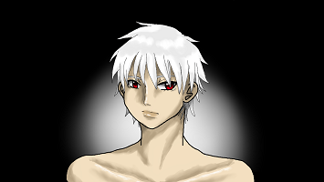
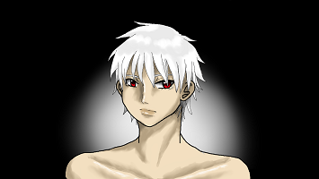

Drawing
I really love drawing, since high school I always drawing anytime I'm free, but since I'm in college and then working, I never drawing anymore. It feels like some of my parts is missing. I'm starting to learn drawing again in this year and also I want to learn how to draw digital, I hope I can draw better than before
Here some example of my drawing:
 

And also here some link to my social media where I post my drawing:
Singing
I love singing, since kid I always have karaoke with my family at home, when in school i joined church's choirs, when in college I also going to karaoke place with my friend, when i was starting to work, I'm still going to karaoke to vent stress, I enjoy singing together with my family and my friends. Nowaday I'm interested in voice acting and voice over, but still in learning about it, hopefully I can do it and gain new skill.
I love to sing and listen to:
- Japanese song - like anime song, vocaloid
- English song - most of them is disney, Sia
- Indonesia song - old song
- Korean song - idol group song like Super Junior, Black Pink, Big Bang
Here list of some songs that I love to sing nowaday:
Reading
I love reading since kid, when I'm still in school I always go to library to borrow books, mostly it's novel and comic sometimes. It just when I'm curious about something I always want to read it. The thickest book I ever read is the book which i borrowed from my friend, I forgot the title, but its story about an alchemist.